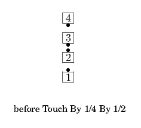

Touch By
From a Single Double Pass Thru, the formation obtained from a Diamond after everyone 1/4 In, or other applicable formations:
Touch By <fraction> By <fraction>
Centers Touch the first fraction and Spread as Others step forward; new Centers Touch the second fraction. Usually ends in a R-H Diamond or a R-H Two-Faced Line. There are no default fractions for this call.


Touch By <fraction> By <anything>
Centers Touch the fraction and Spread as Others step forward; new Centers do the <anything> call. There is no default fraction for this call.
Note: These calls can be extended to include more than two parts from appropriate formations, e.g., from facing Tandems of 3, "Touch By 1/4 By 1/4 By 1/2".
© Copyright 2004-2017 Vic Ceder and CALLERLAB Inc., The International Association of Square Dance Callers. Permission to reprint, republish, and create derivative works without royalty is hereby granted, provided this notice appears. Publication on the Internet of derivative works without royalty is hereby granted provided this notice appears. Permission to quote parts or all of this document without royalty is hereby granted, provided this notice is included. Information contained herein shall not be changed nor revised in any derivation or publication.